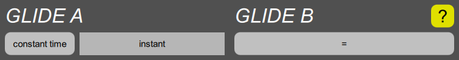

GLIDE section

Each of the two “glide” generators takes the note number and turns it into a control signal that varies an oscillator frequency. GLIDE A always controls OSCILLATOR A, and GLIDE B always controls OSCILLATOR B, but either of them can also used for modulating anything else. The glide generators can also filter the changes in pitch, by applying portamento, which causes pitches to slide from note to note, or glissando, which causes them to go through chromatic steps from note to note.
Since there are only four parameters controlling the glide, each glide only has one glide cluster. The button shows the current shape parameter, and the slider controls the time. The cluster also contains a mod select and mod depth for modulating the time.